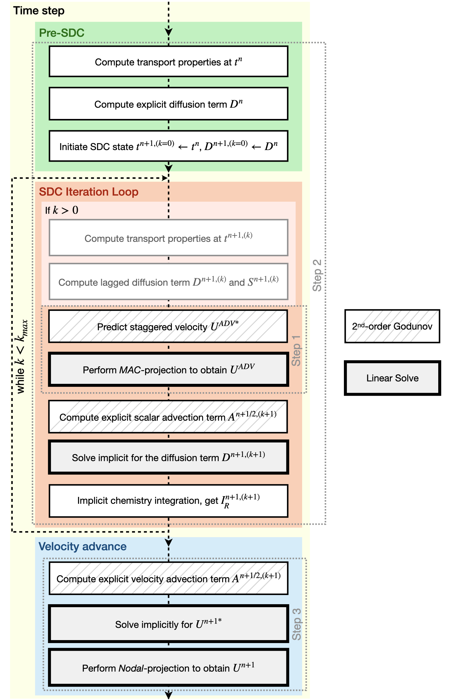
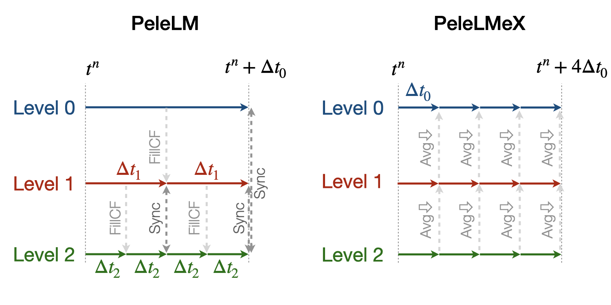
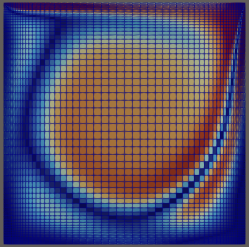

The PeleLMeX Model
In this section, we present the actual model that is evolved numerically by PeleLMeX, and the numerical algorithms to do it. There are many control parameters to customize the solution strategy and process, and in order to actually set up and run specific problems with PeleLMeX, the user must specific the chemical model, and provide routines that implement initial and boundary data and refinement criteria for the adaptive mesh refinement. We discuss setup and control of PeleLMeX in later sections.
Overview of PeleLMeX
PeleLMeX is the non-subcycling version of PeleLM a parallel, adaptive mesh refinement (AMR) code that solves the reacting Navier-Stokes equations in the low Mach number regime. PeleLM is officially deprecated now with support that is not guaranteed to be current.
In a nutshell, PeleLMeX features include:
- Physics & numerics :
Finite volume, block-structured AMR approach
2D-Cartesian, 2D-Axisymmetric and 3D support
Combustion (transport, kinetics, thermodynamics) models based on Cantera and EGLib through PelePhysics
Complex geometries using Embedded Boundaries (EB)
Optional grid-aligned mesh mapping; several specific mappings provided
Second-order projection methodology for enforcing the low Mach number constraint
Time advance based on a spectral-deferred corrections approach that discretely conserves species mass and energy while evolving the system on the equation of state
Several second-order Godunov integration schemes for advection
Temporally implicit viscosity, species mass diffusion, thermal conductivity, chemical kinetics
Closed chamber algorithm enables time-varying background pressure changes
Lagrangian spray description and Hybrid Method of Moments Soot modeling using PelePhysics (formerly these were part of PeleMP).
Mathematical background
PeleLMeX evolves chemically reacting low Mach number flows with block-structured adaptive mesh refinement (AMR) on coordinate-aligned mapped rectangular grids. The code depends upon the AMReX library to provide the underlying data structures and tools to manage and operate on them across massively parallel computing heterogeneous compute architectures. PeleLMeX also utilizes the source code and algorithmic infrastructure of AMReX-Hydro. The core algorithm of PeleLMeX borrows heavily from PeleLM but is simplified to avoid temporal subcycling across the AMR mesh hierarchy. The core algorithms in PeleLM are described in the following series of papers:
A conservative, thermodynamically consistent numerical approach for low Mach number combustion. I. Single-level integration, A. Nonaka, J. B. Bell, and M. S. Day, Combust. Theor. Model., 22 (1) 156-184 (2018)
A Deferred Correction Coupling Strategy for Low Mach Number Flow with Complex Chemistry, A. Nonaka, J. B. Bell, M. S. Day, C. Gilet, A. S. Almgren, and M. L. Minion, Combust. Theory and Model, 16 (6) 1053-1088 (2012)
Numerical Simulation of Laminar Reacting Flows with Complex Chemistry, M. S. Day and J. B. Bell, Combust. Theory Model 4 (4) 535-556 (2000)
An Adaptive Projection Method for Unsteady, Low-Mach Number Combustion, R. B. Pember, L. H. Howell, J. B. Bell, P. Colella, W. Y. Crutchfield, W. A. Fiveland, and J. P. Jessee, Comb. Sci. Tech., 140 123-168 (1998)
A Conservative Adaptive Projection Method for the Variable Density Incompressible Navier-Stokes Equations, A. S. Almgren, J. B. Bell, P. Colella, L. H. Howell, and M. L. Welcome, J. Comp. Phys., 142 1-46 (1998)
The low Mach number flow equations
PeleLMeX solves the reacting Navier-Stokes flow equations in the low Mach number regime, where the characteristic fluid velocity is small compared to the sound speed, and the effect of acoustic wave propagation is unimportant to the overall dynamics of the system. Accordingly, acoustic wave propagation can be mathematically removed from the equations of motion, allowing for a numerical time step based on an advective CFL condition, and this leads to an increase in the allowable time step of order \(1/M\) over an explicit, fully compressible method (\(M\) is the Mach number). In this mathematical framework, the total pressure is decomposed into the sum of a spatially constant (ambient) thermodynamic pressure \(p_0\) and a perturbational pressure, \(\pi({\vec x})\) that drives the flow. Under suitable conditions, \(\pi/p_0 = \mathcal{O} (M^2)\). Note that \(p_0\) is spatially constant, but can be time-dependent as described in the next section.
The set of conservation equations specialized to the low Mach number regime is a system of PDEs with advection, diffusion and reaction (ADR) processes that are constrained to evolve on the manifold of a spatially constant \(p_0\):
where \(\rho\) is the density, \(\boldsymbol{u}\) is the velocity, \(h\) is the mass-weighted enthalpy, \(T\) is temperature and \(Y_m\) is the mass fraction of species \(m\). \(\dot{\omega}_m\) is the molar production rate for species \(m\), the modeling of which will be described later in this section. \(\tau\) is the stress tensor, \(\boldsymbol{\mathcal{Q}}\) is the heat flux and \(\boldsymbol{\mathcal{F}}_m\) are the species diffusion fluxes. These transport fluxes require the evaluation of transport coefficients (e.g., the viscosity \(\mu\), the conductivity \(\lambda\) and the diffusivity matrix \(D\)) which are computed using the library EGLIB, as will be described in more depth in the diffusion section. The source terms, \(S_{\text{ext}}\), are user defined external forcing terms. For example, we have used \(\boldsymbol{S}_{\text{ext},\rho\boldsymbol{u}} = \rho\boldsymbol{F}\) to implement a long-wavelength time-dependent force to establish and maintain quasi-stationary turbulence.
These evolution equations are supplemented by an equation of state for the thermodynamic pressure. For example, the ideal gas law,
In the above, \(W_m\) and \(W\) are the species \(m\), and mean molecular weights, respectively. To close the system we also require a relationship between enthalpy, species and temperature. We adopt the definition used in the CHEMKIN standard,
where \(h_m\) is the species \(m\) enthalpy. Note that expressions for \(h_m(T)\) see <section on thermo properties> incorporate the heat of formation for each species.
Neither species diffusion nor reactions redistribute the total mass, hence we have \(\sum_m \boldsymbol{\mathcal{F}}_m = 0\) and \(\sum_m \dot{\omega}_m = 0\). Thus, summing the species equations and using the definition \(\sum_m Y_m = 1\) we obtain the continuity equation:
This, together with the conservation equations form a differential-algebraic equation (DAE) system that describes an evolution subject to a constraint. A standard approach to attacking such a system computationally is to differentiate the constraint until it can be recast as an initial value problem. Following this procedure, we set the thermodynamic pressure constant in the frame of the fluid,
and observe that if the initial conditions satisfy the constraint, an evolution satisfying the above will continue to satisfy the constraint over all time. Expanding this expression via the chain rule and continuity:
The constraint here takes the form of a condition on the divergence of the flow. Note that the actual expressions to use here will depend upon the equation of state and the chosen models for evaluating the transport fluxes.
For the standard ideal gas EOS,
The corresponding divergence constraint on velocity in this case becomes:
However, it can be shown that
and
Thus, the terms containing \(S_{\text{ext},\rho}\) cancel and the divergence constraint for the standard ideal gas EOS simplifies to:
In addition to the flow equations, PeleLMeX can also solve for a set of quantities that are neither advected nor diffused, satisfying:
Confined domain ambient pressure
In unconfined domains, the ambient pressure will remain constant in time, but for confined domains, this is not the case. Above, we assumed that \(p_0\) was constant. If \(p_0\) is a function of time, the pressure derivative term must be restored in the velocity divergence constraint as:
where \(\theta \equiv 1/(\Gamma_1 p_0)\), with \(\Gamma_1 = \partial ln(p)/\partial ln(\rho)|_s\) being the first adiabatic exponent. \(\Gamma_1\) depends on the composition and is not a constant. Both \(\theta\) and \(S\) can be decomposed into mean and fluctuating components and the above equation can be rewritten as:
where \(\overline \theta\) and \(\overline S\) are the mean values of \(\theta\) and \(S\) over the domain, and \(\delta \theta\) and \(\delta S\) are the perturbations off their respective means. Both \(\delta \theta\) and \(\delta S\) integrate to zero over the domain, by definition. Integrating over the domain volume:
Since the perturbations integrate to zero over the domain volume and the mean values are spatially constant, \(p_0\) is only a function of time, and the above simplifies to:
Solving for \(dp_0/dt\) yields an evolution equation of \(p_0\):
where we have used the divergence theorem to convert the volume integral into a surface integral over the domain boundaries: \(\int_V \nabla \cdot \boldsymbol{u} dV = \int_A \boldsymbol{u} dA\). The above pressure evolution is accompanied by a modified velocity constraint:
The above equations hold for any fully enclosed or partially enclosed domain where there can be mass flowing into or out of the domain, but the net flowrate is non-zero and therefore the pressure should be adjusted in time. In a perfectly enclosed domain, where there is no mass in or out of the system, \(\int_A \boldsymbol{u} dA = 0\) and the pressure evolution simplifies further to:
with the corresponding constraint on the velocity:
The next section summarizes how PeleLMeX evolves the conservation equations while satisfying this constraint.
PeleLMeX Algorithm
An overview of PeleLMeX time-advance function is provided in Fig. 1 and details are provided in the following subsections.

Fig. 1 : Flowchart of the PeleLMeX advance function.
The three main steps of the low Mach number projection scheme, described below, are referenced here to emphasize how the thermodynamic solve is closely weaved into a fractional step approach. Striped boxes indicate where the Godunov procedure is employed, and the four different linear solves required for the algoriuthm are highlighted.
Low Mach number projection scheme
PeleLMeX implements a finite-volume, Cartesian grid discretization approach, where \(U\), \(\rho\), \(\rho Y_m\), \(\rho h\), and \(T\) represent cell averages, and the pressure field, \(\pi\), is defined on the nodes of the grid, and is temporally constant on the intervals over the time step. The discretization is formulated in a uniform grid space, but an a number of optional coordinate-aligned mesh mapping are supported, as discussed in the mesh mapping section.
The projection scheme used in PeleLMeX is based on a fractional step approach where the velocity is first advanced in time using the momentum equation (Step 1) ignoring the constraint, and subsequently projected to enforce the constraint with a linear elliptic solve (Step 3). When considering variable density flows, the advance of thermodynamic scalars is performed between these two steps (Step 2). An SDC approach interlaces Step 1 and Step 2 into a tightly coupled advance. The three major steps of the algorithm, as detailed in the references, Almgren et al. 1998, Day and Bell, 2000, Nonaka et al. 2012), are summarized here:
Step 1: (Compute advection velocities) Use a second-order Godunov procedure to predict a time-centered velocity, \(U^{{\rm ADV},*}\), on cell faces using the cell-centered data (plus sources due to any auxiliary forcing) at \(t^n\), and the lagged pressure gradient from the previous time interval, which we denote as \(\nabla \pi^{n-1/2}\). This provisional field, \(U^{{\rm ADV},*}\), fails to satisfy the divergence constraint, in general. We apply a discrete projection (termed MAC-projection) by solving the elliptic equation with a time-centered source term:
for \(\phi\) at cell-centers, where \(D^{{\rm FC}\rightarrow{\rm CC}}\) represents a cell-centered divergence of face-centered data, \(G^{{\rm CC}\rightarrow{\rm FC}}\) represents a face-centered gradient of cell-centered data, and \(\rho^n\) is computed on cell faces using arithmetic averaging from neighboring cell centers. Also, \(S^{MAC}\) refers to the RHS of the constraint equation, with adjustments to be discussed in the next section – these adjustments are computed to ensure that the final update satisfies the equation of state. The solution, \(\phi\), is then used to define:
After the MAC-projection, \(U^{\rm ADV}\) is a second-order accurate, staggered (face-centered) grid vector field at \(t^{n+1/2}\) that discretely satisfies the constraint. This field is the advection velocity that will be used for computing the time-explicit advective fluxes for \(U\), \(\rho h\), and \(\rho Y_m\).
Step 2: (Advance thermodynamic variables) Integrate \((\rho Y_m,\rho h)\) over the full time step using a spectral deferred correction (SDC) approach, the details of which can be found in PeleLM documentation. An even more detailed version of the algorithm is available in Nonaka et al., 2018.
We begin by computing the diffusion terms \(D^n\) at \(t^n\) that will be needed throughout the SDC iterations. Specifically, we evaluate the transport coefficients \((\lambda,C_p,\mathcal D_m,h_m)^n\) from \((Y_m,T)^n\) at cell centers and averaged to faces. The provisional diffusion fluxes, \(\widetilde{\boldsymbol{\cal F}}_m^n\), are computed with these averaged transport coefficients and state gradients computed with differences across each face. These fluxes are conservatively corrected (i.e., adjusted to sum to zero by adding a mass-weighted “correction velocity”) to obtain \({\boldsymbol{\cal F}}_m^n\) such that \(\sum {\boldsymbol{\cal F}}_m^n = 0\). Finally, we copy the transport coefficients, diffusion fluxes and the thermodynamic state from \(t^n\) as starting values for \(t^{n+1,(k=0)}\), and initialize the reaction terms, \(I_R\) from the values used in the previous step.
The following sequence is then repeated for each “SDC” iteration \(k<k_{max}\) starting at \(k=0\):
if \(k>0\), compute the lagged transport properties from the previous \(k\) state iteration, and update the diffusion terms \(D^{n+1,(k)}\) and divergence constraint \(\widehat S^{n+1,(k)}\)
construct the time-centered MAC-projection RHS, \(S^{MAC}\) by combining \(t^n\) and \(t^{n+1,(k)}\) estimates of \(\widehat S\), and the pressure correction \(\chi\) (Nonaka et al, 2018):
\[S^{MAC} = \frac{1}{2}(\widehat S^n + \widehat S^{n+1,(k)}) + \sum_{i=0}^k \frac{1}{p_{therm}^{n+1,(i)}}\frac{p_{therm}^{n+1,(i)}-p_0}{\Delta t}\]In this update, it is optional whether to update the \(\widehat S^{n+1}\) term on every SDC iteration, or to simply compute it for \(k = 0\) and then hold it constant, with the \(\chi\) correction iterations accounting for changes during the SDC iterations. The latter strategy has been observed to improve convergence in some cases.
Perform Step 1 to obtain the time-centered, staggered \(U^{ADV}\)
Use a 2nd order Godunov integrator to predict species time-centered edge states, \((\rho Y_m)^{n+1/2,(k+1)}\) and corresponding advection terms \(A_m^{n+1/2,(k+1)}\) using \(U^{ADV}\). Source terms for this prediction include explicit diffusion forcing, \(D^{n}\), and an iteration-lagged reaction term, \(I_R^{(k)}\). Since the diffusion and chemistry will not affect the new-time density, we can already compute \(\rho^{n+1,(k+1)}\). This will be needed in the trapezoidal-in-time diffusion solves. We also compute \(A_h^{n+1/2,(k+1)}\): we could also use a Godunov scheme for \(h\) directly but because \(h\) contains the heat of formation scaled to an arbitrary reference state, it is not generally monotonic through flames an so would be difficult to properly limit numerically. Also, because the equation of state is generally nonlinear, this will often lead to numerically-generated non-mononoticity in the temperature field. Using the fact that temperature should be smooth and monotonic through the flame, we instead elect to predict temperature with the Godunov scheme and use face-centered \(T\), \(\rho = \sum (\rho Y_m)\) and \(Y_m = (\rho Y_m)/\rho\) to evaluate \(h\) there. We then evaluate the enthalpy advective flux divergence, \(A_h^{n+1/2,(k+1)}\), for \(\rho h\).
Compute provisional, time-advanced species mass fractions, \(\widetilde Y_{m,{\rm AD}}^{n+1,(k+1)}\), by solving a backward Euler type correction equation for the Crank-Nicolson update. Note that the provisional species diffusion fluxes reads \(\widetilde{\boldsymbol{\cal F}}_{m,{\rm AD}}^{(k)} = -\rho^n D_{m,mix}^n \nabla \widetilde X_{m,{\rm AD}}^{(k)}\). This expression couples together all of the species mass fractions (\(Y_m\)) in the update of each, even for the mixture-averaged model. Computationally, it is much more tractable to write this as a diagonal matrix update with a lagged correction by noting that \(X_m = (W/W_m)Y_m\). Using the chain rule, \(\widetilde{\boldsymbol{\cal F}}_{m,{\rm AD}}^{(k)}\) then has components proportional to \(\nabla Y_m\) and \(\nabla W\). The latter is lagged in the iterations, and is typically very small. The former term can be coupled with the time-derivative and leads to a linear operation. In the limit of sufficient SDC iterations, diffusion is driven by the true form of the the driving force, \(d_m\), but with this strategy each iteration involves decoupled diagonal solves. Following the SDC formalism used above:
\[\frac{\rho^{n+1,(k+1)}\widetilde Y_{m,{\rm AD}}^{n+1,(k+1)} - (\rho Y_m)^n}{\Delta t} = A_m^{{n+1/2,(k+1)}} + \widetilde D_{m,AD}^{n+1,(k+1)} + \frac{1}{2}(D_m^n - D_m^{n+1,(k)}) + I_{R,m}^{(k)}\]The resulting \(\rho^{n+1,(k+1)}\widetilde Y_{m,{\rm AD}}^{n+1,(k+1)}\) are used to compute the implicit (conservatively-corrected) species diffusion fluxes and implicit diffusion term \(D_{m,AD}^{n+1,(k+1)}\), which is employed to get a final AD updated \(\rho^{n+1,(k+1)}\widetilde Y_{m,{\rm AD}}^{n+1,(k+1)}\). Next, we compute the time-advanced enthalpy, \(h_{\rm AD}^{n+1,(k+1)}\). Much like for the diffusion of the \(\rho Y_m\), the \(\nabla T\) driving force leads to a nonlinear, coupled Crank-Nicolson update for \(\rho h\). We define an alternative linearized strategy by following the same SDC-correction formalism used for the species, and write the nonlinear update for \(\rho h\) (noting that there is no reaction source term here):
\[\begin{split} \frac{\rho^{n+1,(k+1)} h_{{\rm AD}}^{n+1,(k+1)} - (\rho h)^n}{\Delta t} = A_h^{n+1/2,(k+1)} + D_{T,AD}^{n+1,(k+1)} + H_{AD}^{n+1,(k+1)} \\ + \frac{1}{2} \Big( D_T^n - D_T^{n+1,(k)} + H^n - H^{n+1,(k)} \Big)\end{split}\]However, since we cannot compute \(h_{{\rm AD}}^{n+1,(k+1)}\) directly, we solve this iteratively based on the approximation \(h_{{\rm AD}}^{(k+1),\ell+1} \approx h_{{\rm AD}}^{(k+1),\ell} + C_{p}^{(k+1),\ell} \delta T^{(k+1),\ell+1}\), with \(\delta T^{(k+1),\ell+1} = T_{{\rm AD}}^{(k+1),\ell+1} - T_{{\rm AD}}^{(k+1),\ell}\), and iteration index, \(\ell\) = 1:\(\,\ell_{MAX}\). The enthalpy update equation is thus recast into a linear equation for \(\delta T^{(k+1);\ell+1}\):
\[\begin{split}\rho^{n+1,(k+1)} C_p^{(k+1),\ell} \delta T^{(k+1),\ell+1} -\Delta t \, \nabla \cdot \lambda^{(k)} \nabla (\delta T^{(k+1),\ell +1}) = \rho^n h^n - \rho^{n+1,(k+1)} \\ h_{AD}^{(k+1),\ell} + \Delta t \Big( A_h^{n+1/2,(k+1)} + D_{T,AD}^{(k+1),\ell} + H_{AD}^{(k+1),\ell} \Big) + \frac{\Delta t}{2} \Big( D_T^n - D_T^{n+1,(k)} + H^n - H^{n+1,(k)} \Big)\end{split}\]where \(H_{AD}^{(k+1),\ell} = - \nabla \cdot \sum h_m(T_{AD}^{(k+1),\ell}) \, {\boldsymbol{\cal F}}_{m,AD}^{n+1,(k+1)}\) and \(D_{T,AD}^{(k+1),\ell} = \nabla \cdot \lambda^{(k)} \, \nabla T_{AD}^{(k+1),\ell}\). After each iteration, update \(T_{{\rm AD}}^{(k+1),\ell+1} = T_{{\rm AD}}^{(k+1),\ell} + \delta T^{(k+1),\ell+1}\) and re-evaluate \((C_p ,h_m)^{(k+1),\ell+1}\) using \((T_{{\rm AD}}^{(k+1),\ell+1}, Y_{m,{\rm AD}}^{n+1,(k+1)}\)).
Based on the updates above, we define an effective contribution of advection and diffusion to the update of \(\rho Y_m\) and \(\rho h\):
\[\begin{split}&&Q_{m}^{n+1,(k+1)} = A_m^{n+1/2,(k+1)} + D_{m,AD}^{(n+1,k+1)} + \frac{1}{2}(D_m^n - D_m^{n+1,(k)}) \\ &&Q_{h}^{n+1,(k+1)} = A_h^{n+1/2,(k+1)} + D_{T,AD}^{n+1,(k+1)} + H_{AD}^{n+1,(k+1)} + \frac{1}{2}(D_T^n - D_T^{n+1,(k)} + H^n - H^{n+1,(k)} )\end{split}\]that we treat as piecewise-constant source terms to advance \((\rho Y_m,\rho h)^n\) to \((\rho Y_m,\rho h)^{n+1,(k+1)}\). The ODE system for the reaction part over \(\Delta t^n\) then takes the following form:
\[\begin{split}\frac{\partial(\rho Y_m)}{\partial t} &=& Q_{m}^{n+1,(k+1)} + \rho\dot\omega_m(Y_m,T)\\ \frac{\partial(\rho h)}{\partial t} &=& Q_{h}^{n+1,(k+1)}.\end{split}\]After the integration is complete, we make one final call to the equation of state to compute \(T^{n+1,(k+1)}\) from \((Y_m,h)^{n+1,(k+1)}\). We also can compute the effect of reactions in the evolution of \(\rho Y_m\) using,
\[I_{R,m}^{(k+1)} = \frac{(\rho Y_m)^{n+1, (k+1)} - (\rho Y_m)^n}{\Delta t} - Q_{m}^{n+1,(k+1)}.\]If \(k=k_{max}-1\), the time-advancement of the thermodynamic variables is complete, set \((\rho Y_m,\rho h)^{n+1} = (\rho Y_m,\rho h)^{n+1,(k+1)}\).
Before moving to Step 3, the new time viscosity and instantaneous divergence constraint \(\widehat S^{n+1}\) are re-evaluated.
Step 3: (Advance the velocity) Compute an intermediate cell-centered velocity field, \(U^{n+1,*}\) using the lagged pressure gradient, by solving
where \(\tau^{n+1,*} = \mu^{n+1}[\nabla U^{n+1,*} +(\nabla U^{n+1,*})^T - \frac{2}{3} \mathcal{I} \, \nabla \cdot U^{n+1,*}]\) and \(\rho^{n+1/2} = (\rho^n + \rho^{n+1})/2\), and \(F\) is the velocity forcing. This is a semi-implicit discretization for \(U\), requiring a linear solve that couples together all velocity components. The time-centered velocity in the advective derivative, \(U^{n+1/2}\), is computed in the same way as \(U^{{\rm ADV},*}\), but also includes the viscous stress tensor evaluated at \(t^n\) as a source term in the Godunov integrator. At this point, the intermediate velocity field \(U^{n+1,*}\) does not satisfy the constraint. Hence, we apply an approximate projection to update the pressure and to project \(U^{n+1,*}\) onto the constraint surface. Note that this final projection is a linear solve for nodal quantities and is distinct from the MAC projection and diffusion solvers, all of which solve for cell-centered quantities. For the RHS of this nodal projection, we compute \(\widehat S^{n+1}\) from the new-time thermodynamic variables and an estimate of \(\dot\omega_m^{n+1}\), which is evaluated directly from the new-time thermodynamic variables. We project the new-time velocity by solving the elliptic equation,
for nodal values of \(\phi\). The linear operator here, \(L^{{\rm N}\rightarrow{\rm N}}\), operates on nodal data and computes the standard bilinear finite-element approximation to \(\nabla\cdot(1/\rho^{n+1/2})\nabla\). Also, \(D^{{\rm CC}\rightarrow{\rm N}}\) is a discrete second-order operator that approximates the divergence at nodes from cell-centered data and \(G^{{\rm N}\rightarrow{\rm CC}}\) approximates a cell-centered gradient from nodal data. Nodal values for \(\widehat S^{n+1}\) required for this equation are obtained by interpolating the cell-centered values. Finally, we determine the new-time cell-centered velocity field using
and the new time-centered pressure using \(\pi^{n+1/2} = \phi\).
Thus, as mentioned, there are three different types of linear solves required to advance the velocity field. The first is the MAC solve in order to obtain face-centered velocities used to compute advective fluxes. The second is the multi-component cell-centered solver is used to obtain the provisional new-time velocities. Finally, a nodal solver is used to project the provisional new-time velocities so that they satisfy the constraint.
Advection schemes
PeleLMeX relies on the AMReX-Hydro implementation of the 2nd-order Godunov method, with several variants available. The basis of the Godunov approach is to extrapolate the cell-centered quantity of interest (\(U\), \(\rho Y\), \(\rho h\)) to cell faces using a second-order Taylor series expansion in space and time. As detailed in AMReX-Hydro documentation, the choice of the slope order and limiting scheme define the exact variant of the Godunov method. Of particular interest for combustion applications, where sharp gradients of intermediate chemical species are found within flame fronts, the Godunov_BDS approach provides a bound-preserving advection scheme which greatly limits the appearance of over-/under-shoots. Such non-monotonicity would otherwise lead to critical failure of the stiff chemical kinetic integration.
Note that in the presence of EB, only the Godunov_PLM variant is currently available.
AMR extension
In contrast with PeleLM, PeleLMeX does not rely a on subcycling approach to advance the AMR hierarchy. This difference is illustrated in the figure below comparing the multi-level time-stepping approach in both codes:

PeleLM will recursively advance finer levels, halving the time step size (when using a refinement ratio of 2) at each level. For instance, considering a 3 levels simulation, PeleLM advances the coarse Level0 over a \(\Delta t_0\) step, then Level1 over a \(\Delta t_1\) step and Level2 over two \(\Delta t_2\) steps, performing an interpolation of the Level1 data after the first Level2 step. At this point, a synchronization step is performed to ensure that the fluxes are conserved at coarse-fine interface and a second Level1 step is performed, followed by the same two Level2 steps. At this point, two synchronizations are needed between the two pairs of levels.
In order to get to the same physical time, PeleLMeX will perform 4 time steps of size similar to PeleLM’s \(\Delta t_2\), advancing all the levels at once. The coarse-fine fluxes consistency is this time ensured by averaging down the face-centered fluxes from fine to coarse levels. Additionally, the state itself is averaged down at the end of each SDC iteration.
In practice, PeleLM will perform a total of 7 single-level advance steps, while PeleLMeX will perform 4 multi-level ones to reach the same physical time, advancing the coarser levels at a smaller CFL number whereas PeleLM maintain a fixed CFL at all the level. It might seem that PeleLMeX is thus performing extra work, but because it ignores fine-covered regions, PeleLMeX does not need to perform the expensive (and often very under-resolved) chemistry integration in fine-covered areas. Synchronization across levels in PeleLMeX is also far simpler. An exact evaluation of the benefits and drawbacks of each approach is under way.
Geometry with Embedded Boundaries
PeleLMeX relies on AMReX’s implementation of the Embedded Boundaries (EB) approach to represent geometrical objects. In this approach, the underlying computational mesh is uniform and block-structured, but the boundary of the irregular-shaped computational domain conceptually cuts through this mesh. Each cell in the mesh becomes labeled as regular, cut or covered, and the finite-volume based discretization methods traditionally used in AMReX applications need to be modified to incorporate these cell shapes. AMReX provides the necessary EB data structures, including volume and area fractions, surface normals and centroids, as well as local connectivity information. The fluxes described in the projection scheme section are then modified to account for the aperture opening between adjacent cells and the additional EB-fluxes are included when constructing the cell flux divergences.
A common problem arising with EB is the presence of the small cut-cells which can either introduce undesirable constraint on the explicit time step size or lead to numerical instabilities if not accounterd for. PeleLMeX relies on a combination of classical flux redistribution (FRD) (Pember et al, 1998) and state redistribution (SRD) (Giuliani et al., 2022) to circumvent the issue. In particular, explicit advective fluxes \(A^{n+1/2,(k+1)}\) are treated using SRD while explicit diffusion fluxes \(D^{n}\) and SDC iteration-lagged \(D^{n+1,(k)}\) are treated with FRD. Note that implicit diffusion fluxes are not redistributed as AMReX’s linear operators are EB-aware.
The use of AMReX’s multigrid linear solver introduces constraint on the complexity of the geometry PeleLMeX is able to handle. The efficiency of the multigrid approach relies on generating coarse version of the linear problem. If the geometry includes thin elements (such as tube or plate) or narrow channels, coarsening of the geometry is rapidly limited by the occurrence of multi-cut cells (not supported by AMReX) and the linear solvers are no longer able to robustly tackle projections and implicit diffusion solves. AMReX include an interface to HYPRE which can help circumvent the issue by sending the coarse-level geometry directly to HYPRE algebraic multigrid solvers. More details on how to use HYPRE is provided in control Section.
Mesh Mapping
The AMReX framework inherently assumes spatially constant grid spacing in each coordinate direction. Localized isotropic refinement is available via the dynamic placement of logically rectangular patches of mesh, typically refined by a factor of 2 or 4. PeleLMeX expands the ability for local refinement by supporting a limited form of coordinate-aligned mapped meshes, which can be used to concentrate grid refinement along specific boundaries, for example, to aid in capturing anisotropic physical processes, such as turbulent boundary layers along physical walls. The mesh mapping can then be combined with AMR to dramatically enhance and locally focus computational resources where needed in certain types of problems.
The mappings supported are specified via the coordinate-aligned transformation \(\Xi(x,y,z) = (x(\chi), y(\eta), z(\xi))\), where \((\chi,\eta,\xi)\) are the uniform coordinates along each AMReX-supported indexing direction. Such a formulation allows arbitrarily stretched meshes in each coordinate direction while enforcing that directions along the AMR mesh indexing remain aligned with the underlying physical coordinate directions. The implementation of this capability sits on top of the uniform-mesh numerics of PeleLMeX and AMReX-Hydro by exploiting the flexibility of the underlying operators, using pre- and post-scaling of the differential operators and vectors that form the discretization. In this context, the physical mesh spacing, \((dx,dy,dz)\) becomes \((x_{\chi} dx, y_{\eta} dy, z_{\xi} dz)\). This represents a diagnonal transformation, \(T\), with associated Jacobian, \(J\), that represents the local change of discrete cell volume. A vector \(U\) in uniform mesh coordinates can be transformed to one expressed in physical coordinates by premultiplying its components by the transformation matrix, \(T\), i.e., \({\bar U} = T U\). The divergence of \(U\), computed with uniform coordinate components, \((\chi,\eta,\xi)\), and with differences in uniform space can be converted to the physical divergence of the physical vector, \(\nabla \cdot U = \frac{1}{J} {{\tilde \nabla} \cdot {\bar U}}\). Similarly, all vectors and differential operators used in PeleLMeX can be written in terms of uniform-grid operators and subsequent mesh transformations.

Fig. 2 PeleLMeX solution computed using TanhStretchMap in a 2D example, LidDrivenCavity with Re=1000. Here, the stretching factor, \(\beta=3\) in both directions, concentrating mesh cells along all 4 boundaries.
Several mesh mapping functions are provided with PeleLMeX currently, including ConstantMap, ExpStretchMap and TanhStretchMap. ConstantMap provides a simple, piecewise-constant stretching in each coordinate direction. ExpStretchMap allows for an exponential stretching in a single direction to concentrate cells toward one boundary. TanhStretchMap allows concentration of cells along both the low and high sides of each dimension independently. Allowable parameters to control this feature are described in the controls section. Examples that employ these transformations appear in the RegTests folder, including LidDrivenCavity and PipeFlow. Note that stretching beyond a \(\beta\) factor of above about 3-4 begins to degrade the converence of the discrete operators in PeleLMeX, and \(\beta > 2\) requires that the numerical linear solvers be changed from AMReX’s default of MLMG to Hypre. Note that amrvis and yt are unable to display computed solution with the mappings applied. The above image was created using ParaView, after loading the plotfile and choosing Warp By Vector from the list of available Filters. Any analysis carried out with solutions computed with this mesh mappings will need to incorporate the mappings as appropriate. Also note that this capability is currently incompatible with the turbulent inflow tools.
Setting initial and boundary conditions. Because the AMReX index space corresponds to the uniform \((\chi,\eta,\xi)\)
coordinates, the physical location of a cell is not its uniform-space position — it is recovered by applying the map. A problem
whose initial state depends on the physical coordinate must therefore use the mapping-aware initdata_mapped signature, which receives
a device-callable MeshMapEvaluator that returns the physical coordinate of any cell or face from its integer index:
static void initdata_mapped(
int i, int j, int k, int is_incompressible,
amrex::Array4<amrex::Real> const& state,
amrex::Array4<amrex::Real> const& aux,
amrex::GeometryData const& geomdata,
MeshMapEvaluator const& mmap,
ProbParm const& prob_parm,
pele::physics::PMF::PmfData::DataContainer const* pmf_data)
{
// Physical cell-centre coordinates (curvilinear, NOT the xi-space ones):
const amrex::Real x = mmap.x_phys_cc(0, i, geomdata);
const amrex::Real y = mmap.x_phys_cc(1, j, geomdata);
const amrex::Real z = mmap.x_phys_cc(2, k, geomdata);
// ... initialize state(i,j,k,*) using the physical (x,y,z) ...
}
When a problem defines initdata_mapped it is selected automatically (via the has_initdata_mapped_v<> dispatch in
PeleLM::initLevelData); otherwise the standard initdata is used, which remains appropriate for position-independent initial
states. Inflow values supplied through bcnormal likewise receive the physical coordinate. Worked examples appear in the
LidDrivenCavity, PipeFlow, HotBubble and SingleDropEvap cases under the RegTests folder.
Warning
The cell-centered state, and the AMReX plotfiles written under mesh mapping, live on the uniform \((\chi,\eta,\xi)\) grid —
not the physical grid. Any code that uses spatial coordinates — initial conditions, boundary conditions, in-situ diagnostics, and
especially external post-processing or analysis — must first map the uniform index location to its physical coordinate, and must
transform vector and differential-operator quantities accordingly. Treating the stored data as though it lived on a uniform physical
mesh yields incorrect distances, gradients, fluxes, and integrals wherever the mesh is stretched. Plotfiles render in
\((\chi,\eta,\xi)\)-space unless warped by the nodal-displacement field that PeleLMeX writes when
peleLM.plot_mesh_mapping = 1 (for example via ParaView’s Warp By Vector); amrvis and yt cannot display the mapped solution.
Transforming vectors and operators. Let \(f_i\) denote the local per-direction stretch factor (the diagonal entries of
\(T\): \(f_x = x_\chi\), \(f_y = y_\eta\), \(f_z = z_\xi\)) and \(J = f_x f_y f_z\) the cell-volume Jacobian. Both are
maintained internally by the solver (\(J\) is the detJ metric, \(f_i\) the fac metric). The physical spacing in
direction \(i\) is \(f_i\) times the uniform spacing, so a derivative formed from uniform-space differences is converted to a
physical derivative by dividing by the corresponding factor, and the physical divergence of a physical vector
\(\bar{\boldsymbol{u}} = T \boldsymbol{u}\) follows from the uniform-space divergence:
where \(\xi_i \in (\chi,\eta,\xi)\) and \(\tilde{\nabla}\) denotes differences taken in the uniform space. As a concrete analysis example, the out-of-plane vorticity computed from the (physical) velocity components \((u,v)\) is
i.e. each uniform-space difference must be divided by the stretch factor for its direction. A naive uniform-grid post-processor that omits the \(1/f_i\) weights will over- or under-estimate every gradient in the stretched regions, by exactly the local factor \(f_i\).
Large Eddy Simulation
To provide closure for the unresolved turbulent stress/flux terms in Large Eddy Simulation (LES), PeleLMeX supports the constant-coefficient Smagorinsky, WALE and Sigma models for turbulent transport of momentum, species, and energy. These models are based on a gradient transport assumption, resulting in terms analogous to the molecular transport of these quantities, but with modified turbulent transport coefficients. The basis of all these algebraic closures is to model the subgrid scale (sgs) viscosity with:
where \(C_m\) is a model constant, \(\Delta\) is the subgrid length scale (typically the grid size) and \(\mathcal{D}(\boldsymbol{u})\) is a differential operator acting on the filtered velocity. \(\mu_t\) is then calculated using the filtered density \(\mu_t = \overline{\rho} \cdot \nu_{t}\). In the Smagorinsky model, \(C_m = C_s = 0.18\) and \(\mathcal{D}\) writes:
where filtered quantities are indicated with an overbar, Favre-filtered quantities are indicated with a tilde. In the WALE model, \(C_m = C_w = 0.60\) and \(\mathcal{D}\) writes:
When using the Sigma model, \(C_m = C_{\sigma} = 1.35\) and \(\mathcal{D}\) writes:
where the \(\sigma\) are the singular values of the filtered velocity gradient tensor.
The total diffusive transport of momentum from both viscous and turbulent stresses is then computed as
The thermal conducivity and species diffusivities are similarly modified with turbulent contributions, \(\lambda_t = \mu_t \widetilde{c_p} / Pr_t\) and \((\rho D)_t = \mu_t/Sc_t\). The solution algorithm is unchanged other than the addition of these turbulent coefficients to the corresponding molecular transport properties. Nominal values for the model coefficient \(Sc_t = Pr_t = 0.7\).
Limitations: Because the turbulent transport coefficients are nonlinear functions of the velocity field, the treatment of the diffusion terms is not fully implicit when LES models are active. While the implicit solves as described above are kept in place to ensure numerical stability, the turbulent transport coefficients are evaluated only at the old timestep, with the old turbulent values also used to approximate the values at the new timestep. Additionally, the present implementation cannot be used with PLASMA.